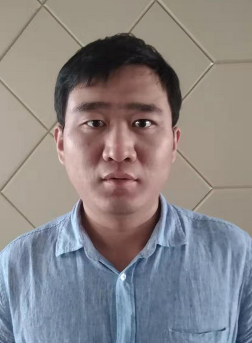

|  |
I am an assistant Professor at Westlake University, Hangzhou, China, since March 2020. Prior to this, I worked in the PERCEPTION team at INRIA Grenoble Rhône-Alpes, France, as a post-doctoral researcher from Feb. 2014 to Jan. 2016, and as a starting research scientist from Feb. 2016 to Dec. 2019, hosted by Dr. Radu Horaud. I did my PhD in Electronics at Peking University, during 2007 to 2013, supervised by Prof. Hong Liu. I received a Bachelor degree in Electronic Information from Beijing Institute of Machinery in 2007. My field of expertise is acoustic/audio/speech signal processing, including the research topics of channel identification/equalization, noise estimation, sound source localization, speech enhancement, speech separation, voice activity detection, robust speech recognition, audio-visual fusion, etc. I have two major contributions in the field: the applications of convolutive transfer function to sound source localization and speech dereverberation; narrow-band deep filtering applies deep neural network for signal filtering, more specifically for speech denoising. Contact: lixiaofei at westlake dot edu dot cn OPENING The group currently has several openings for Research Assistant and Postdoc Researcher. Please send me your CV if you are interested. |